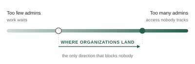

Why do organizations hand out more access than they mean to?
Foundational and quantitative research on admin role management and external collaboration — for a system where the real failure mode isn't a missing feature, it's a permission nobody remembers granting.
The paradox
Every IT admin I spoke with knew the principle of least privilege. Every one of them could explain why granting broad access was dangerous. And their organizations were over-provisioned anyway.
The reason turned out to be structural rather than careless. Having many highly-privileged admins is a security risk. Having too few creates an operational bottleneck — work stops while people wait for someone with the right permissions. Organizations resolve that tension in the only direction that doesn't block anyone: they quietly grant more access than they intend to, and then lose track of it.

Where the journey actually breaks
I mapped four journeys admins move through — assigning a role, creating one, changing one, and auditing what exists — and watched people perform them on real tasks rather than hypothetical ones. The two hardest steps were hard for opposite reasons.
Creating a role consumed the most time. Privilege descriptions were written in language that didn't map to anything an admin recognized, so building a role meant rounds of trial, testing, and validation to find out what it actually permitted. Assigning a role was faster but by far the most error-prone, and admins knew it — it was the step they approached most cautiously, because a wrong assignment is silent and durable.
The segment split mattered too. Smaller organizations leaned on prebuilt system roles as far as they could stretch them, which is its own kind of over-granting. Larger enterprises built custom roles and ran into the scoping limits instead.
Deciding what to build first
The feature backlog was longer than the roadmap, and the debate about what mattered most was being settled by whoever argued hardest. I fielded a MaxDiff and TURF prioritization survey with IT decision-makers to replace that with a ranking.
Just-in-time privileged access — temporary, time-bound elevation through an approval workflow — came out as the single most valued capability, ahead of every other candidate. Which is the paradox resolving itself: given a way to grant high privilege that automatically expires, organizations don't need to choose between risk and bottleneck. The survey didn't just rank features, it confirmed the diagnosis.
The other half: sharing outside the company
External collaboration ran on an assumption worth testing — that people had a reasonable sense of what they'd shared outside the organization. They didn't. Limited visibility into who has access to what, and at what level, produced a persistent low confidence that showed up as hesitation rather than complaint.
The design instinct had been to give precise control at the level of each individual document. Research pointed the other way: per-document control creates an auditing bottleneck, and what people actually needed was one consolidated view of every external permission in one place. On labeling, a small durable finding — pairing icons with colors rather than relying on color alone, because color carries different meanings for different people and none of them are guaranteed.
What shipped
Guest accounts reached general availability in Google Workspace in March 2026. The public announcement describes provisioning external collaborators into the organization's own domain so they can work across Chat, Drive, Docs, Slides, Sheets, and Meet while remaining subject to the organization's security policies — external collaboration that stays inside the governance model rather than routing around it.
Reflection
Security research is UX research wearing a different badge. The temptation in this space is to add controls, because controls are legible as security work. Almost everything I found pointed the other way: people already had more controls than they could reason about. Making the current state of access visible mattered more than making it more configurable.